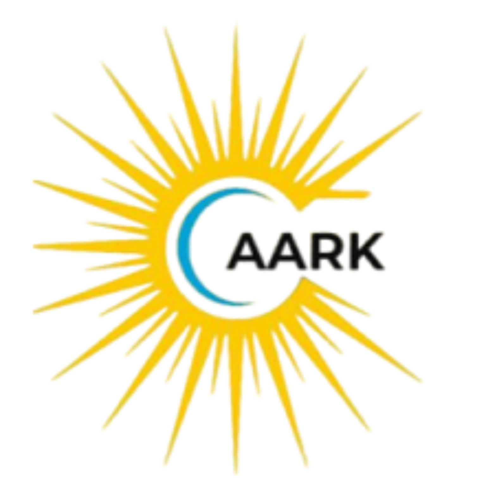

CBSE · Affiliation 430650 · School Code 11842
Pre-Nursery → Grade 12 · Sevasi, Vadodara
Office: 9:00 AM – 12:00 PM

Our Approach
Learning Journey
Campus
⌄
Campus Overview
Classrooms
AI & Robotics
Swimming & Sports
Arts & Music
Student Life
Admissions
⌄
Admissions Overview
Admission Schedule
Admission Procedure
Admission Instructions
Admission Form
Fee Structure
Admission FAQs
Admission Brochure
Resources
⌄
Mandatory Public Disclosure
Circulars & Pamphlets
Policies & Documents
Careers
Contact
Book a Campus Visit
Our Approach
Learning Journey
Campus
Student Life
Admissions
Overview
Schedule
Procedure
Instructions
Form
Fee Structure
FAQs
Brochure
Parent Resources
Mandatory Public Disclosure
Circulars & Pamphlets
Policies & Documents
Careers
Contact
Book a Tour
ON CAMPUS
Campus
This page uses only facility descriptions supported by AARK’s current public website. More detailed copy and photography can be replaced with school-approved material before launch.
Book a Campus Visit